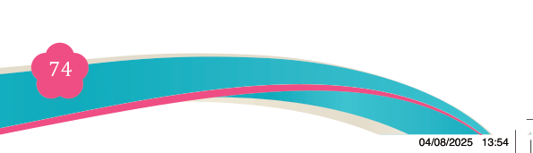
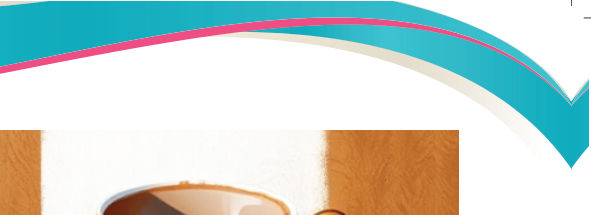
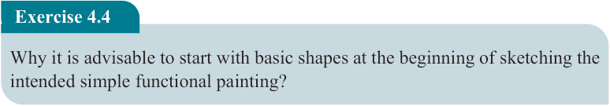
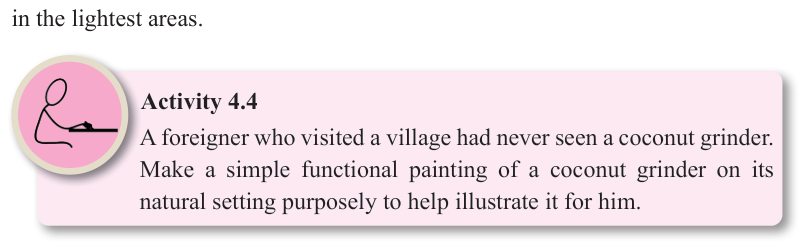

Fine Art for Secondary Schools

74

Student’s Book Form Two


When painting, rest your palm onto the canvas for control and support.
It is a lot easier to get a straight
line when the palm of your
hand is supported than when
unsupported on a canvas.
As acrylic paint dries very
quickly, make sure you clean
your brushes regularly by
dipping them into some water,
and rubbing them with a piece
of cloth /sponge or squeezing
their bristle with fingers. If
you don’t do that, wet paint on brushes will solidify and cannot be re-used. To
maintain a clean paint, have more water and change it regularly. Remember dirty
paint affects the quality of your painting. Now add some of the brightest highlights
in the lightest areas.

Activity 4.4
A foreigner who visited a village had never seen a coconut grinder.
Make a simple functional painting of a coconut grinder on its natural setting purposely to help illustrate it for him.
Exercise 4.4
Why it is advisable to start with basic shapes at the beginning of sketching the intended simple functional painting?
Step 5: Adding details
This step involves adding the elements that put some life into your painting.
(i) Paint the decorations, add shadings and highlights.
(ii) Be patient and practise a lot: you will discover how easy it is to work with acrylics.
Figure 4.13: Shading using colour on the teacup painting image
04/08/2025 13:54